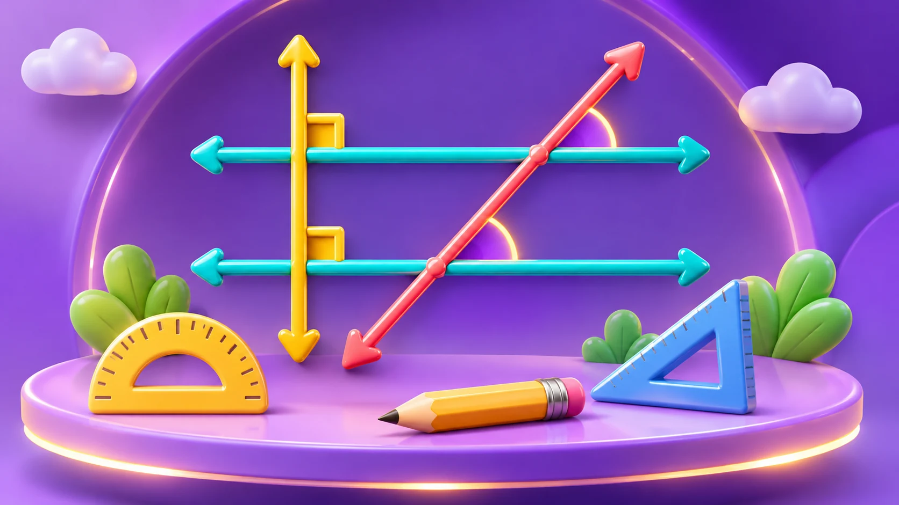

✦ ✧ ✦
🎮 ریاضی هشتم • فصل سوم • توازی و تعامد
آزمایشگاه جادویی خطها
خطها را حرکت بده، زاویهها را کشف کن و با حل مأموریتها به استاد هندسه تبدیل شو!
ایستگاه۱ از ۷
ستارهها۰ ⭐
نشانها۰ از ۷

خطها را حرکت بده، زاویهها را کشف کن و با حل مأموریتها به استاد هندسه تبدیل شو!